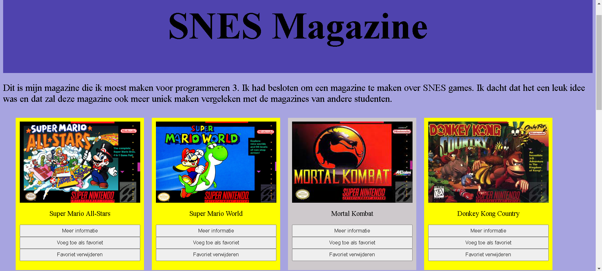

Tijdens programmeren 3 lag het focus vooral op de front end. Ik moest een magazine maken waarin je items kon toevoegen als favoriet door ze op te slaan in je local storage. Ook moest je per item een knop toevoegen waar meer informatie stond over dat item. Ik moest tijdens deze vak veel gaan werken met Javascript. Ik leerde hoe je events moest maken, waardoor ik items clickable kon maken.
Ik was vrij om te kiezen waar ik mijn magazine over wilde maken. Ik heb een grote hobby voor games. Ik groeide op met de SNES console, dus besloot ik om mijn magazine te vullen met games die uitkwamen op die console.
